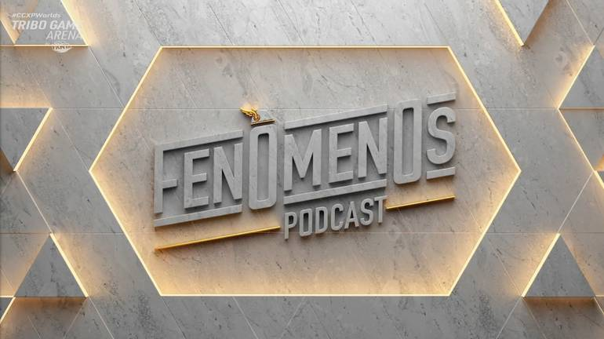

Ronaldo e Gaules lançam o Fenômenos Podcast
Programa acontecerá na Twitch e conta com convidados como Neymar e Tiago Leifert

Dois fenômenos e milhares de histórias. Um foi campeão do mundo e é considerado um dos melhores jogadores da história do futebol, o outro é um dos maiores streamers do mundo, movimentando milhares de torcedores e carregando a paixão do Counter-Strike brasileiro. Em comum, a idolatria de milhões e histórias de superação.
Ronaldo Fenômeno e Gaules se juntam agora para contar suas histórias e as de convidados especiais no seu novo podcast juntos: o Fenômenos Podcast
Mesmo com a pandemia e a distância entre ambos, a primeira temporada alterna episódios gravados presencialmente e bate-papos remotos, sempre mantendo o tom divertido e irreverente que cativou o público. Os convidados são de honra: Neymar, Tiago Leifert e outros fenômenos em suas áreas de atuação que ainda serão divulgados. A estreia está marcada para janeiro de 2022.
O primeiro episódio da primeira temporada foi gravado no Museu do Futebol, em São Paulo, e é uma conversa apenas entre os dois apresentadores. Os episódios irão ao ar no canal do Gaules e no canal do Ronaldo, ambos na Twitch TV. A primeira temporada terá 10 episódios, que também estarão disponíveis em VODs no YouTube.
“É sempre uma honra conversar e trocar ideias com o Ronaldo. Adicionar um terceiro fenômeno na conversa traz muitas histórias e assuntos diferentes, em alguns casos são mundos diferentes, mas principalmente, tudo recheado de muitas risadas. Tudo que uma boa resenha deve ter”, comentou Gaules, que é sócio e streamer do Omelete Company.
“Durante a pandemia, passei a jogar games com mais frequência e acompanhei muitas lives do Gau. Foi aí que nasceu a ideia de me tornar um streamer. Lancei a Ronaldo TV e me aproximei muito dele, se tornou um parceiro nos games. O podcast é resultado dessa conexão entre a gente e os episódios estão ficando sensacionais. Eu e o Gaules sabemos deixar os convidados à vontade, afinal eles são nossos amigos. E é aí que saem as melhores resenhas”, explicou Ronaldo.

Com mais de três milhões de seguidores e picos de 343 mil dispositivos simultâneos, Gaules se tornou o canal da Twitch mais assistido globalmente em outubro. Atualmente, ele compete em dois prêmios, o The Game Awards 2021 como melhor criador de conteúdo e em duas categorias no Prêmio E-Sports Brasil, como Personalidade do Ano e Streamer do Ano.
Recentemente, Ronaldo lançou a Ronaldo TV, um canal na Twitch no qual o craque faz lives jogando games, comentando futebol e transmitindo eventos esportivos. O projeto é comandado pela holding ODDZ Network, lançada nesse ano, que pertence ao ex-atleta.